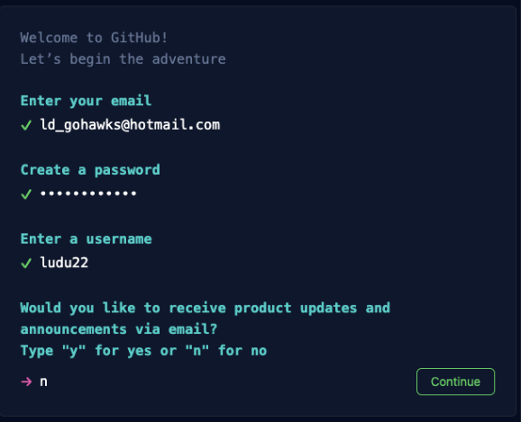
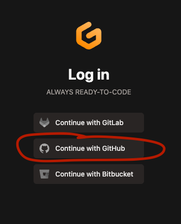
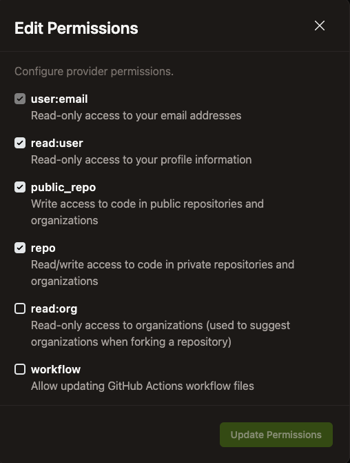
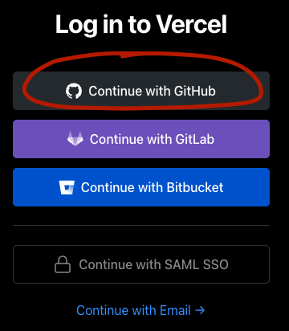
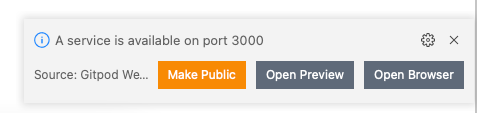

Web App w/ React & Next.js
Goals 📝
- Javascript + React
- Frameworks and other abstractions
- Building/deploying/developing
- How to think like a computer
What is a web app?
Is there a difference!
Website (e.g. Wikipedia)
vs Web Application (e.g. Facebook, Gmail)
How is this done?
Javascript makes your site dynamic!
And React is popular Javascript library.
How do software developers (you) create Web Applications?
Version Control
- Git
- GitHub
IDEs (Integrated Development Environment)
- VSCode
- GitPod
Open Source APIs
- React, Next.js (libraries/frameworks)
- PokeAPI
- SpaceX API
Hosting
- AWS
- Azure
- Vercel
What is react?
A javascript library for building user interfaces
- Declarative (car analogy)
- Component-Based (legos!)
- Use with DOM (web), Node (ssr web), React-Native (mobile)
- JSX (like html!)
What is Next.js?
Open source framework for building Web Apps
- Server-side rendering
- Bundling (Babel/webpack)
- Static generation
- Serverless APIs
- Routes
LET’S GET SETUP!

Github
- Go to
https://github.com/ - Click Sign up
- Follow prompts

Gitpod
- Go to
https://www.gitpod.io/ - Click Login
- Continue with GitHub
- Follow OAuth prompt

Gitpod cont…
- Settings -> Integrations
- Github -> Edit Permissions
- User:email
- Read:user
- Public_repo
- Repo

Vercel
- Go to
https://vercel.com/ - Click Sign Up
- Continue with Github
- Follow OAuth prompt

Break?
Let’s Deploy 🚀
Let’s Deploy 🚀
- Fork
https://github.com/ludu12/pokeapp- Go to Vercel and import the pokeapp repo
- Watch it deploy!
Let’s make an update ⚒️
- Go to (using your github username):
gitpod.io/#https://github.com/{your-username}/pokeapp- Make a change
- Commit and push!… watch it deploy

More updates!
- Go to
/pages/index.js - Bring our home page to life!
We have broken code!
Let’s fix it
- Go to
/lib/use-deck.js toggleHandleris our problem!- Optional: In terminal run
npm run test
Think like a computer (algorithm)
- Computers are fast, consistent idiots
- For things to work properly, we must think of all use cases
- We can also look in our toolbox for abstractions mdn